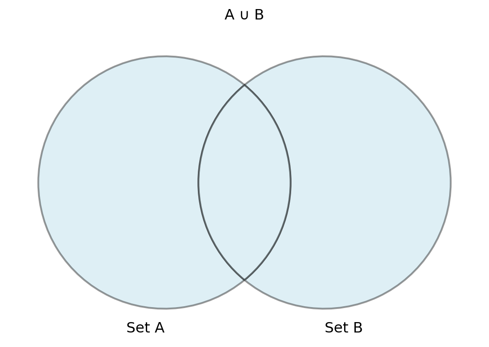

{kind=link}
| ID | Course | Term | Enrl |
|---|---|---|---|
| 1 | CMSC301 | Fall 2024 | 220 |
| 2 | CMSC408 | Fall 2024 | 175 |
| 3 | CMSC445 | Fall 2024 | 37 |
| 4 | CMSC475 | Fall 2024 | 128 |
| 5 | CMSC408 | Fall 2023 | 125 |
Basic Operations
Relational algebra is a formal system used to manipulate and query relational databases. The foundational operations of relational algebra—selection, projection, and union—enable users to filter, narrow, and combine data sets in efficient ways. These operations are critical for building complex queries and are the basis for modern query languages like SQL. By mastering these basic concepts, individuals can optimize their database queries and gain deeper insights into relational data management.
Introduction to Relational Algebra
Relational algebra is a formal system for manipulating relations, foundational for querying relational databases. This section introduces the core principles and significance of relational algebra in database systems.
- Relational algebra is a procedural query language.
- It provides the formal foundation for relational database operations.
- Operations in relational algebra manipulate sets of tuples.
- The basic operations include selection, projection, and union.
- Understanding relational algebra is crucial for effective query optimization.
Relational algebra underpins the structure and functionality of modern relational databases.
Selection Operation in Relational Algebra
The selection operation retrieves rows from a relation that meet specified conditions. It allows narrowing down data based on predicates, forming a key part of querying in relational databases.
σ - Selection (sigma)
- Selection filters rows based on a condition (predicate).
- The result includes only those tuples that satisfy the predicate.
- Denoted as σ(condition)(Relation)
- It’s a unary operation, meaning it operates on a single relation.
- The result of a selection can be used as input into subsequent operations.
- Selection is often used in conjunction with other operations like projection.
- condition can contain any relational operator (e.g., =, <, >=, etc.)
Unicode examples
Below are examples of what these statement will look like on the Canvas quiz.
σ(ID=3)(Courses)
σ(Course=‘CMSC408’)(Courses)
σ(Enrl<=100)(Courses)
Properties of the selection operator
Definition
\[ \sigma_{\rho}(R) = \{ t \mid t \in R \text{ and } \rho(t) == \text{true} \} \]
- where \(t\) is a row in \(R\),
- \(\rho\) (the predicate) is a boolean expression that evaluates true or false for all rows in \(R\),
- \(\rho\) consists of one or more terms connected by \(\land\)(and), \(\lor\)(or), \(\neg\)(not) function.
- Terms in \(\rho\) are simple relational expressions evaluated using \(=\), \(\ne\), \(<\), \(>\), \(\le\), \(\ge\).
Properties
- Idempotent - can be applied multiple times without side effects:
\[ \sigma_{A}(R) = \sigma_{A} ( \sigma_{A}(R) ) \]
- Commutative - the order of application doesn’t matter:
\[ \sigma_{A}( \sigma_{B}(R) ) = \sigma_{B}( \sigma_{A}(R) ) \]
- Distributed - operations can be subdivided and combined
\[ \begin{aligned} \sigma_{A \land B}( R ) &= \sigma_{A}(R) \cap \sigma_{B}(R) \\ &= \sigma_{A}( \sigma_{B}(R) ) = \sigma_{B}( \sigma_{A}(R) ) \\ \sigma_{A \lor B}( R ) &= \sigma_{A}(R) \cup \sigma_{B}(R) \end{aligned} \]
Selection - σ - Example 1
Given the Courses(ID,Course,Term,Enrl) below:
σ(ID=3)(Courses) returns:
| ID | Course | Term | Enrl |
|---|---|---|---|
| 3 | CMSC445 | Fall 2024 | 37 |
Selection - σ - Example 2
Given the Courses(ID,Course,Term,Enrl) below:
| ID | Course | Term | Enrl |
|---|---|---|---|
| 1 | CMSC301 | Fall 2024 | 220 |
| 2 | CMSC408 | Fall 2024 | 175 |
| 3 | CMSC445 | Fall 2024 | 37 |
| 4 | CMSC475 | Fall 2024 | 128 |
| 5 | CMSC408 | Fall 2023 | 125 |
σ(Course=‘CMSC408’)(Courses) returns:
| ID | Course | Term | Enrl |
|---|---|---|---|
| 2 | CMSC408 | Fall 2024 | 175 |
| 5 | CMSC408 | Fall 2023 | 125 |
Selection - σ - Example 3
Given the Courses(ID,Course,Term,Enrl) below:
| ID | Course | Term | Enrl |
|---|---|---|---|
| 1 | CMSC301 | Fall 2024 | 220 |
| 2 | CMSC408 | Fall 2024 | 175 |
| 3 | CMSC445 | Fall 2024 | 37 |
| 4 | CMSC475 | Fall 2024 | 128 |
| 5 | CMSC408 | Fall 2023 | 125 |
σ(Enrl<=100)(Courses) returns:
| ID | Course | Term | Enrl |
|---|---|---|---|
| 3 | CMSC445 | Fall 2024 | 37 |
Projection Operation in Relational Algebra
The projection operation retrieves specific columns from a relation. It enables focusing on certain attributes while discarding others, making it a key operation in relational queries.
Π - Projection operator
- Projection reduces the relation to specific columns (attributes).
- Denoted as Π(attribute1, attribute2,…)(Relation).
- It’s used to eliminate unnecessary or redundant data.
- Like selection, projection is a unary operation.
- Projection also drops duplicate records (SQL doesn’t!)!
- Projection can be combined with other operations for complex queries.
Examples
Given a relation Courses(ID,Course,Term,Enrl), the following are valid unicode examples of projection:
Π(ID,Course)(Courses):
Π(Course)(Courses):
Π(Term)(Courses):
Π(Term,ID)(Courses):
Projection helps streamline query results by focusing on relevant attributes.
Definition of projection
Definition \[ \pi_{A_1, A_2, \dots, A_n}(R) = \{ t[A_1, A_2, \dots, A_n] \mid t \in R \} \]
- where \(t\) is a row in \(R\),
- \(A_1, A_2, \dots, A_n\) are the attributes (columns) of relation (R),
- The projection operator returns a new relation containing only the specified attributes \(A_1, A_2, \dots, A_n\) from \(R\),
- The resulting relation may contain duplicate rows, which are usually removed in standard relational algebra (i.e., it becomes a set rather than a multiset).
Explanation
- The projection operator \(\pi\) selects certain columns (attributes) from the relation \(R\), discarding the others.
- It operates by returning only the specified columns for each tuple (row) in \(R\), effectively creating a “vertical slice” of the relation.
- Duplicate tuples in the result are eliminated to ensure the output is a valid set.
Properties of projection
- Idempotent – Projection can be applied multiple times without side effects:
\[ \pi_{A_1, A_2, \dots, A_n}( \pi_{A_1, A_2, \dots, A_n}(R) ) = \pi_{A_1, A_2, \dots, A_n}(R) \]
- Commutative – The order of projection on overlapping sets of attributes doesn’t matter:
\[ \pi_{A_1, A_2}( \pi_{A_2, A_3}(R) ) = \pi_{A_2}( \pi_{A_1, A_3}(R) ) \]
(if \(A_1\), \(A_2\), and \(A_3\) are overlapping or compatible)
Non-distributive – Projection does not distribute over selection, but it interacts in specific ways:
- Projection over selection (you can select first, then project):
\[ \pi_{A_1, A_2}( \sigma_{B}(R) ) = \pi_{A_1, A_2}(R) \quad \text{if } B \text{ involves only attributes } A_1, A_2 \]
- Selection over projection (you cannot project first if selection involves non-projected attributes):
\[ \sigma_{B}( \pi_{A_1, A_2}(R) ) \quad \text{undefined if } B \text{ involves attributes not in } A_1, A_2 \]
Explanation of Properties
- Idempotent: Reapplying projection on the same set of attributes does not change the result. Once the attributes are reduced, further projection on the same set will not alter the relation.
- Commutative: When projecting on overlapping or compatible sets of attributes, the order of application does not matter (the resulting attributes will still be the same).
- Non-distributive: Unlike selection, projection cannot be freely distributed over operations such as selection, because projection limits the available attributes. It must respect the interaction between available attributes and conditions in the selection.
Projection - Π - Example 1
Given the Courses(ID,Course,Term,Enrl) below:
| ID | Course | Term | Enrl |
|---|---|---|---|
| 1 | CMSC301 | Fall 2024 | 220 |
| 2 | CMSC408 | Fall 2024 | 175 |
| 3 | CMSC445 | Fall 2024 | 37 |
| 4 | CMSC475 | Fall 2024 | 128 |
| 5 | CMSC408 | Fall 2023 | 125 |
Π(ID,Course)(Courses) returns:
| ID | Course |
|---|---|
| 1 | CMSC301 |
| 2 | CMSC408 |
| 3 | CMSC445 |
| 4 | CMSC475 |
| 5 | CMSC408 |
Projection - Π - Example 2
Given the Courses(ID,Course,Term,Enrl) below:
| ID | Course | Term | Enrl |
|---|---|---|---|
| 1 | CMSC301 | Fall 2024 | 220 |
| 2 | CMSC408 | Fall 2024 | 175 |
| 3 | CMSC445 | Fall 2024 | 37 |
| 4 | CMSC475 | Fall 2024 | 128 |
| 5 | CMSC408 | Fall 2023 | 125 |
Π(Course)(Courses) returns:
| Course |
|---|
| CMSC301 |
| CMSC408 |
| CMSC445 |
| CMSC475 |
Projection - Π - Example 3
Given the Courses(ID,Course,Term,Enrl) below:
| ID | Course | Term | Enrl |
|---|---|---|---|
| 1 | CMSC301 | Fall 2024 | 220 |
| 2 | CMSC408 | Fall 2024 | 175 |
| 3 | CMSC445 | Fall 2024 | 37 |
| 4 | CMSC475 | Fall 2024 | 128 |
| 5 | CMSC408 | Fall 2023 | 125 |
Π(Term)(Courses) returns:
| Term |
|---|
| Fall 2024 |
| Fall 2023 |
Projection - Π - Example 4
Given the Courses(ID,Course,Term,Enrl) below:
| ID | Course | Term | Enrl |
|---|---|---|---|
| 1 | CMSC301 | Fall 2024 | 220 |
| 2 | CMSC408 | Fall 2024 | 175 |
| 3 | CMSC445 | Fall 2024 | 37 |
| 4 | CMSC475 | Fall 2024 | 128 |
| 5 | CMSC408 | Fall 2023 | 125 |
Π(Term,ID)(Courses) returns:
| Term | ID |
|---|---|
| Fall 2024 | 1 |
| Fall 2024 | 2 |
| Fall 2024 | 3 |
| Fall 2024 | 4 |
| Fall 2023 | 5 |
Union Operation in Relational Algebra
The union operation combines tuples from two relations, eliminating duplicates. It’s an essential set operation in relational algebra, used for merging query results.
∪ - Union Operator
- Union combines two relations into a single relation.
- Both relations must be union-compatible (same number of attributes and domains).
- Denoted as R ∪ S.
- Duplicates are automatically removed from the result.
- Union is a binary operation, meaning it operates on two relations.

Examples
Courses1 ∪ Courses2
Courses1 ∪ Courses3
The union operation enables the merging of datasets in a relational context.
Definition of Union Operator
Definition
\[ R_1 \cup R_2 = \{ t \mid t \in R_1 \text{ or } t \in R_2 \} \]
- where \(t\) is a row (tuple),
- \(R_1\) and \(R_2\) are relations (tables) with the same attributes,
- The union operation returns a new relation containing all distinct rows that are present in either \(R_1\), \(R_2\), or both,
- Duplicate rows are eliminated in the result, ensuring the output is a set, not a multiset.
Properties of Union
- Idempotent – Applying the union of a relation with itself doesn’t change the result:
\[ R \cup R = R \]
- Commutative – The order of relations in a union operation doesn’t matter:
\[ R_1 \cup R_2 = R_2 \cup R_1 \]
- Associative – The grouping of union operations doesn’t affect the result:
\[ (R_1 \cup R_2) \cup R_3 = R_1 \cup (R_2 \cup R_3) \]
- Union with an empty set – The union of a relation with an empty set is the relation itself:
\[ R \cup \emptyset = R \]
- Union distributes over intersection – The union of two relations distributes over their intersection:
\[ R_1 \cup (R_2 \cap R_3) = (R_1 \cup R_2) \cap (R_1 \cup R_3) \]
Explanation of Properties
- Idempotent: Combining a relation with itself does not add any new rows since the union eliminates duplicates.
- Commutative: The union is symmetric, so the order of relations does not affect the result.
- Associative: You can group union operations in any way, and the result will be the same.
- Union with an empty set: Union with an empty relation results in the original relation, as the empty set contributes no rows.
- Distributed: Union distributes over intersection in a way that respects the structure of both operations.
Union - ∪ - Example 1
Given Courses1( Course,Term):
| Course | Term |
|---|---|
| CMSC301 | Fall 2024 |
| CMSC408 | Fall 2024 |
| CMSC408 | Fall 2023 |
and Courses2( Course,Term ):
| Course | Term |
|---|---|
| CMSC110 | Fall 2024 |
| CMSC201 | Fall 2024 |
| CMSC475 | Fall 2023 |
| CMSC408 | Fall 2024 |
Courses1 ∪ Courses2 returns:
| Course | Term |
|---|---|
| CMSC301 | Fall 2024 |
| CMSC408 | Fall 2024 |
| CMSC408 | Fall 2023 |
| CMSC110 | Fall 2024 |
| CMSC201 | Fall 2024 |
| CMSC475 | Fall 2023 |
Union - ∪ - Example 2
Given Courses1( Course,Term):
| Course | Term |
|---|---|
| CMSC301 | Fall 2024 |
| CMSC408 | Fall 2024 |
| CMSC408 | Fall 2023 |
and Courses3( Course,Term ):
| Term | Term_code |
|---|---|
| Fall 2022 | 202310 |
| Fall 2023 | 202410 |
| Fall 2024 | 202510 |
Courses1 ∪ Courses3 returns:
Because the schema for Courses1 and Courses3 are different, that is, the number, names, and domains of the columns don’t match exactly, the two relations cannot be combined.
The term Union Compatible is used to describe two relations with the same number, names, and domains of columns.
Combining Selection and Projection
In real-world queries, selection and projection are often combined to both filter and reduce data. This allows for more refined and efficient query results.
In relational algebra operations can be chained, that is, the results from one operation can be directly used inside another operation.
- Suppose we have a relation Students(Name, Grade).
- Query: Π(Name)(σ(Grade > 75)(Students)).
- The result includes only the names of students with grades above 75.
- Combining operations allows for more complex and specific queries.
- Selection and projection together form the backbone of query design.
- Relational operations are ordered from the inside to the outside.
- Given this query: Π(Name)(σ(Grade > 75)(Students))
- First, the selection operation is performed, resulting in a subset of the original relation,
- then, the projection operation is performed, reducing the number of columns in the result.
Combining operations enables precise and targeted query results in relational databases.
Combined Example 1
Given Students( ID,Name,Major,GPA,Grad_Year):
| ID | Name | Major | GPA | Grad_Year |
|---|---|---|---|---|
| V10101 | Alice | CS | 3.5 | 2024 |
| V10102 | Bob | Math | 3.8 | 2023 |
| V10103 | Carol | CS | 3.2 | 2025 |
| V10104 | Dave | Physics | 3.9 | 2023 |
Find the Names and GPAs of all students who are expected to graduate in 2023.
Π(Name,GPA)(σ(Grad_Year=2023)(Students))
| Name | GPA |
|---|---|
| Bob | 3.8 |
| Dave | 3.9 |
Combined Example 2
Given Students( ID,Name,Major,GPA,Grad_Year):
| ID | Name | Major | GPA | Grad_Year |
|---|---|---|---|---|
| V10101 | Alice | CS | 3.5 | 2024 |
| V10102 | Bob | Math | 3.8 | 2023 |
| V10103 | Carol | CS | 3.2 | 2025 |
| V10104 | Dave | Physics | 3.9 | 2023 |
Find the majors of all students with a GPA greater than 3.5
Π(Major)(σ(GPA>3.5)(Students))
| Major |
|---|
| Math |
| Physics |
Combined Example 3
Given Students( ID,Name,Major,GPA,Grad_Year):
| ID | Name | Major | GPA | Grad_Year |
|---|---|---|---|---|
| V10101 | Alice | CS | 3.5 | 2024 |
| V10102 | Bob | Math | 3.8 | 2023 |
| V10103 | Carol | CS | 3.2 | 2025 |
| V10104 | Dave | Physics | 3.9 | 2023 |
Find the ID and Names of all students in computer science.
Π(ID,Name)(σ(Major=CS)(Students))
| ID | Name |
|---|---|
| V10101 | Alice |
| V10103 | Carol |
Larger Reporting Systems
Relational algebra operations are commonly used in reporting systems to query data, extract insights, and generate reports. Below are examples of larger operations as applied in practice.
- Example: Generating a list of employees eligible for a bonus.
- Selection operation to filter eligible employees based on criteria (e.g., performance).
- Projection to display only relevant fields (e.g., Name, Department).
- Union to combine results from different departments.
- Example: Generating a report of products sold by specific vendors.
- Selection to filter products by vendor ID.
- Projection to display product name and vendor details.
- Cartesian product to cross-reference products with vendor data.
- Example: Compiling a list of employees not assigned to any projects.
- Anti-join to find employees not in the project assignment table.
- Projection to show employee names and departments.
- Set difference to exclude employees with assignments from the employee list.
- Example: Producing a report of sales trends over time.
- Selection to filter sales data by date range.
- Aggregation to calculate sales totals by month or quarter.
- Join to merge sales data with product or category details.
Note that these examples introduce additional operators to complement the Selection, Projection and Union already discussed. That’s what we’ll discuss next!
Larger Reporting Systems
On the preceding slide:
Each of these examples is considered a single query even though they contains multiple single relational operations.
Your semester long project must document 20 unique queries. To accomplish this, you’ll need plenty of entities (tables).
Conclusion: Mastering Basic Relational Algebra
Understanding the basic operations of relational algebra is crucial for working with relational databases. These operations enable effective data querying, filtering, and combination.
- Selection, projection, and union are foundational operations.
- Each operation serves a specific purpose in querying relational data.
- Combining operations enables more complex and powerful queries.
- Mastering these operations is essential for advanced database management.
- Relational algebra forms the core of SQL and other query languages.
Mastering relational algebra is key to becoming proficient in database management and query design.